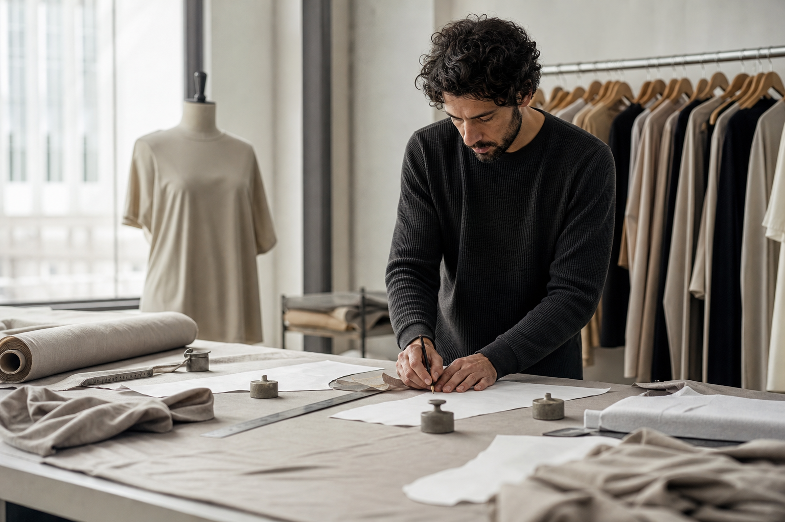
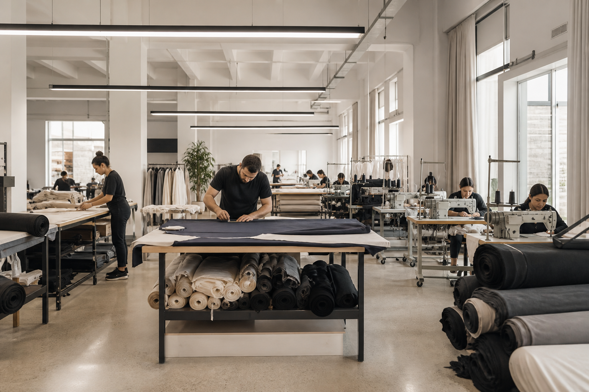
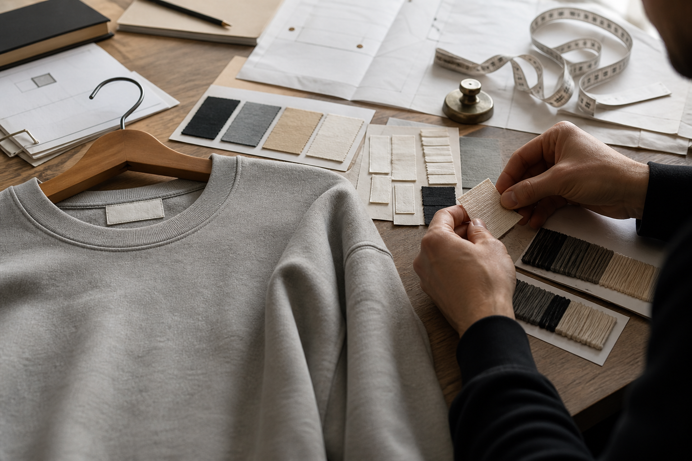
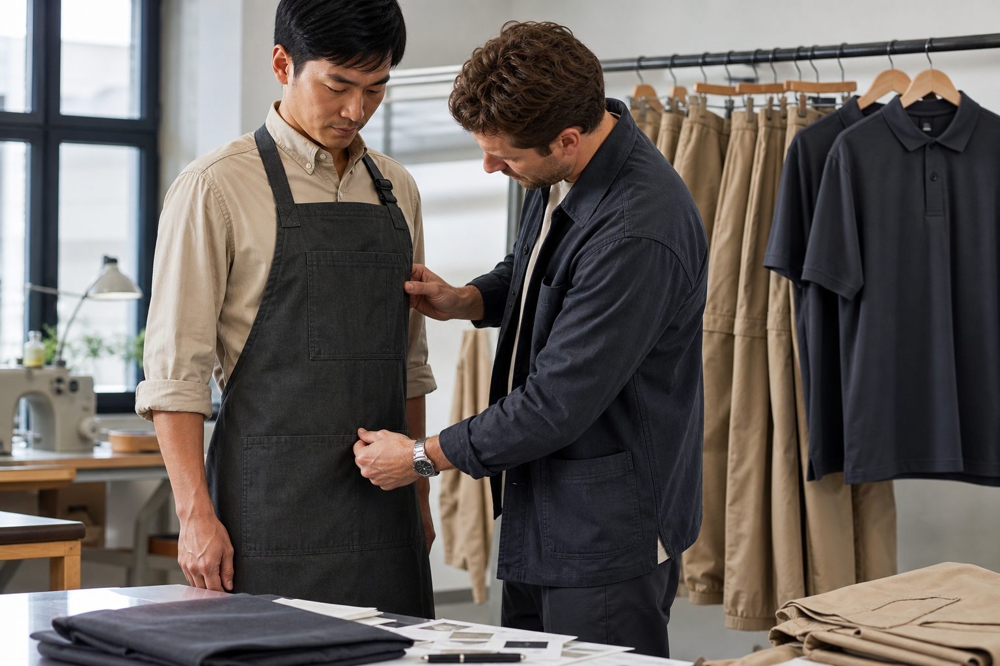

Kumaş Seçimi
Ürüne uygun kumaş ve yapı seçimi birlikte planlanır.
Argent Tekstil olarak tekstil üretiminde ürünün her aşamasını birlikte planlıyor ve yönetiyoruz. Markalar ve işletmeler için farklı ürün gruplarında üretim gerçekleştiriyor, ürün geliştirmeden paketlemeye kadar süreci tek yapı altında yürütüyoruz.

Argent Tekstil’in geçmişi tekstil sektöründeki uzun yıllara dayanan ürün, kumaş ve müşteri deneyimine dayanır. Bugün bu birikimi üretim, ürün geliştirme ve marka ihtiyaçlarına yönelik çözümlerle sürdürüyoruz.
Markalar ve işletmeler için farklı ürün gruplarında tekstil üretimi gerçekleştiriyor, ürün geliştirmeden üretim ve paketlemeye kadar ihtiyaç duyulan süreci tek yapı altında yönetiyoruz.
Hakkımızda
Ürün yapısına ve üretim planına göre ilerleyen temel aşamalar.
Ürüne uygun kumaş ve yapı seçimi birlikte planlanır.
Model ve ölçü yapısına uygun numune süreci hazırlanır.
Üretime uygun kesim planı oluşturulur.
Onaylanan ürüne göre üretim gerçekleştirilir.
Ürünler etiket ve paketleme detaylarıyla tamamlanır.

Markanıza özel model, kumaş, renk, kalıp, baskı, nakış, etiket ve aksesuar seçenekleriyle üretim sürecini birlikte planlıyoruz.
Onaylanan ürün üzerinden numune, üretim ve teslimat sürecini yönetiyoruz.
Detaylı Bilgiİşletmelere ve ekip kullanımına uygun önlük, personel kıyafeti ve kurumsal iş giyimi üretimi gerçekleştiriyoruz.
Baskı ve nakış seçenekleriyle işletmenize uygun çözümler sunuyoruz.
Detaylı Bilgi
Ekibimiz size en kısa sürede dönüş sağlayacaktır.